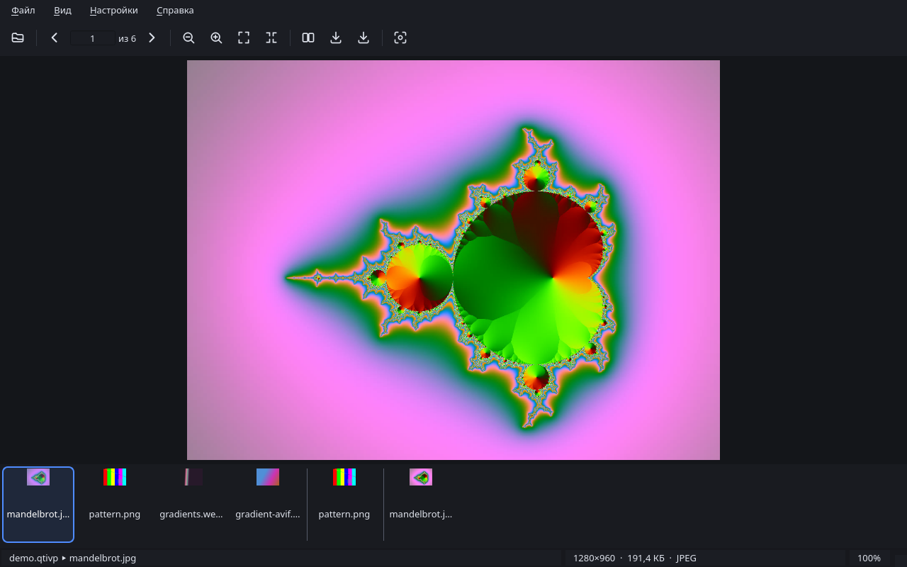
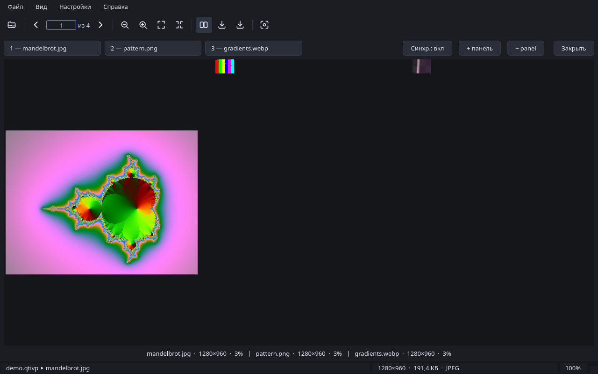

Просмотрщик изображений на C++20 и Qt 6. Сравнивает до восьми фотографий
рядом с синхронным зумом, конвертирует, открывает собственный формат альбомов
.qtivp — несколько фото в одном файле без перекодирования. Умеет рисовать
картинку прямо в терминале: qtiv -c фото.jpg. Телеметрии нет,
аккаунтов нет, фоновых процессов нет.
текущая версия 0.1.2 · исходники на github.com/I114rk/QTIV

01 скачать
| система | файл | размер | |
|---|---|---|---|
| Windows 10+ (64-бит) | qtiv-0.1.2-win64-setup.exe | — | скачать |
| Arch Linux | qtiv-0.1.2-1-x86_64.pkg.tar.zst | — | скачать |
| Debian · Ubuntu (amd64) | qtiv_0.1.2-1_amd64.deb | — | скачать |
| исходники | tar.gz · zip | — | релизы |
Контрольные суммы — на странице релиза. Установщик Windows кладёт три программы: qtiv, qtivp (альбомы из консоли) и qtivh (руководство). Для других систем — сборка из исходников, см. README.
02 что умеет
- Просмотр — зум колесом к курсору до 64×, панорамирование, «по размеру окна» и 1:1, шахматный фон под прозрачностью, EXIF-ориентация.
- Сравнение — от 2 до 8 фото рядом, зум и панорамирование синхронные; каждое фото выбирается в свою панель.
- Конвертация — PNG, JPEG, WebP, AVIF, BMP; одно фото (Ctrl+S) или весь плейлист (Ctrl+Shift+S) с настройкой качества.
- Альбомы .qtivp — упаковать папку в один файл и распаковать обратно байт в байт: qtivp -compress / -extract / -list / -test.
- Терминал —
qtiv -c: kitty graphics, sixel, полублоки или ASCII, возможности терминала определяются автоматически. - Два языка — русский и английский, переключение на лету. Руководство внутри программы: F1 или отдельное окно qtivh.
03 сравнение

Из окна — клавишей F12, из консоли — сразу с нужными фото:
qtiv -comp до.jpg после.jpg # две панели qtiv -comp -n=3 отпуск.qtivp # три фото из альбома
04 терминал
qtiv -c файл сам выбирает лучший режим: kitty graphics
(kitty, WezTerm, Ghostty, Konsole), sixel (foot, xterm, mintty), затем
полублоки с truecolor и, на самый крайний случай, ASCII. Режим можно
задать флагами --kitty --sixel
--half --ascii. Внутри tmux — честные полублоки.
ниже — реальный вывод команды, не картинка:
qtiv -c --ascii examples/mandelbrot.jpg
+++++++************###########*********+
+++++***********################********
++++**********####################******
+++**********######################*****
+++********############**++**#######****
++********###########**+==-=+*######****
+********##########***+=-++==+*######***
+*******#########***++=-=+++-=+*######**
*******########****+=---++*+--=+*#####**
******########***++=-=+++-:++===+*#####*
*****#######**++==---++-....:++==*#####*
*****######**+----:-++........==-*#####*
****######**+-=+===++:........:+-+*####*
****#####*++=-++++++=::......::=-+*#####
****###**+=--=++#*++-:::....:::=-+*#####
***####+=---=+=***=-:::::...-===-+*#####
***####=-++++++++-:::::::::+**+--+*#####
***####*+----++=-..-::::--=*#**=-+*#####
****####*++=--++=:-=-:::-=+**##+-+*#####
****#####**+=-=++++*+---=++****+-+*#####
****######**+==----=+====+++***+-+*####=
*****######**+==---:=+=-++++**===*#####*
*****########**++==--++++++++++==*#####*
******########***++=-==++*-++--=+*#####*
*******#########***+==--++-+--=+*#####**
+*******##########***+=-++=-+**######**
+********###########**+=-====**######***
++********###########***==-+**######****
+++*********###########*****#######*****
++++*********#####################******
05 формат .qtivp
Открытый контейнер: несколько фотографий в одном файле без
перекодирования. Внутри — сигнатура QTIVP1\0\0, индекс
записей (имя, MIME-тип, размеры, смещения, CRC32) и данные, опционально
сжатые zlib. Спецификация занимает две страницы и отдана в общественное
достояние (CC0); в тестах лежит независимая реализация на Python.
qtivp -compress фото.qtivp img_*.jpg # упаковать qtivp -extract фото.qtivp ~/out # распаковать байт в байт qtivp -test фото.qtivp # проверить CRC всех записей
полная спецификация: docs/QTIVP-SPEC.md
06 установка
# Arch Linux sudo pacman -U qtiv-0.1.2-1-x86_64.pkg.tar.zst # Debian, Ubuntu, Mint sudo apt install ./qtiv_0.1.2-1_amd64.deb # Windows запустить qtiv-0.1.2-win64-setup.exe и нажать «далее»
После установки в меню появится «QTIV» (просмотрщик) и «QTIV Help»
(руководство). В терминале работают qtiv,
qtivp и qtivh.